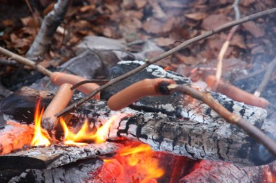
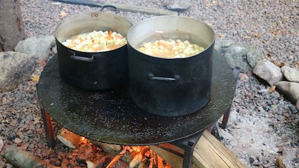
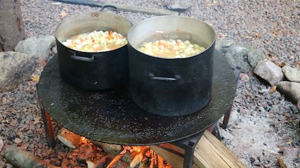
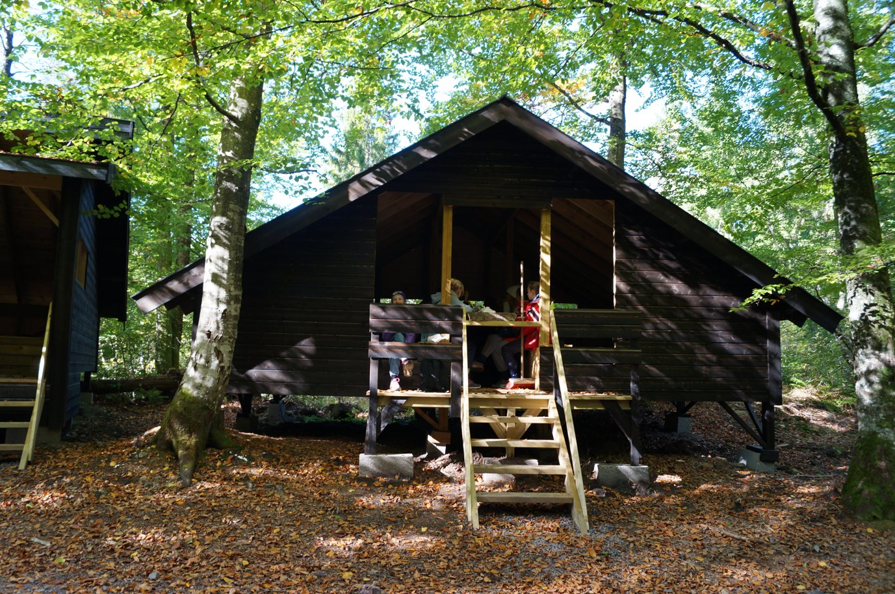

Villmarksleir i Vestfold, i skogen på Aarholt-tunet.
Leiren for ungdommer 13-15 år var også i 2020 fullbooket. Nå kan en melde seg på neste års leir som er 9.-13. august 2021.

Er du mellom 13 - 15 år og har lyst til å bruke noe av sommerferien på å lære noe nytt og spennende, både om naturen, om deg selv og om andre? Da vil vi veldig gjerne ha deg med!
Vi er Geir (nå også kjent som "fenriken" i Kompani Lauritzen, fortsatt full av humor, men ikke så streng på sengetrekk på Villmarksleiren), Espen og Jan Magne Kaasene. Geir og Espen jobber av og til som instruktører på Aarholt-tunet leirskole.
Du har kanskje sett Espen som programleder på TV2 i tv-serien "ØYA" vinteren 2018?
Vi kan raskt begynne å kjede oss, særlig når vi må sitte lenge inne! Derfor inviterer vi deg til å bli med oss og over 20 andre ungdommer ut! Vi skal ikke på ei øy, vi skal i Villmarka rundt Aarholt-tunet leirskole i Vestfold!
LITT OM INNHOLDET.
Villmarksleiren går over fem dager. Helt fra vi møtes mandag formiddag til vi drar hvert til vårt på fredag ettermiddag, vil det være et sammensatt opplegg bestående av øvelser, aktiviteter og oppgaver som vi alle skal utforske sammen.
 

Felles for alt sammen er at det vil foregå ute, så husk soveposen. Det vil si, vi har tak over hodet da, hvis vi trenger det, men vi har ikke så mange vegger. Du trenger ikke være redd, - vi har ikke tenkt til å fryse, være sultne, eller å slite deg ut. Vi skal bare gjøre masse moro som vi mener at vi voksne burde ha gjort mye mer av sammen med dere unge.

{kind=link}
Også skal vi lære noe nytt om oss selv, om hverandre og om andre mennesker. Listen blir veldig lang hvis vi skal ramse opp alt vi har tenkt til å lære deg her, men vi kan nevne noe av det du garantert vil lære:
- Fyre bål uten bruk av fyrstikker (også når det regner).
- Hvordan bygge ly for vær og vind, og gjøre det behagelig å sove i skogen.
- Å finne frem i naturen, både med, og uten kart og kompass.
- Hvordan kle på seg for ikke å fryse.
- Hvordan "snakke sammen" og ta vare på hverandre i skogen uten å lage en eneste lyd.
SPØRSMÅL og PÅMELDING:
Gjør en forskjell AS v/ Geir M. Aker og Espen O. Simonsen.
Mailadr.:
espen@gjorenforskjell.no
geir@optimuskompetanse.no
Link for mer info og påmelding til ungdomsleiren:
www.gjorenforskjell.no
Der ligger det påmeldingsskjema og mer info.
PRIS:
kr 5 300,- pr deltaker (inkluderer leiravgift, overnatting, mat, alle aktiviter, samt noe utstyr som ungdommene vil få.)
Synes du dette høres spennende ut? Vi vet faktisk om mange voksne som er lei seg for at de ikke får lov til å være med selv. Det som er helt sikkert er at du vil lære mange ting som voksne sannsynligvis ikke kan. Kanskje du må ta dem med ut og lære dem opp når du kommer hjem? Eller de voksne kan reise på egen leir. Gå inn på linken ovenfor.
Har du som ungdom lyst til å være med må du selvfølgelig spørre om lov av en voksen. Også må de lese informasjonen vi har lenger nede på siden.
PS: Vi kommer til å være lenge oppe, og når vi først legger oss kommer du til å sove som en stein! :)
HVOR ?
Vi skal være på Aarholt-tunet leirskole i Stokke. Vest for Tønsberg og E-18. Stedet drives av Ingfrid og Svein.

Som du ser er det mange flotte byggninger på Aarholt-tunet. Vi derimot, skal være i skogen på Aarholt-tunet. I "Bøketunet" og i "Villmarkstunet" og rundt omkring i mellom disse stedene.
Vi er veldig glade for at vi får leke rundt i skogene rundt Aarholt-tunet, med alt det spennende vi finner på eiendommen der.
Og så kommer Ingfrid og Svein til å hjelpe oss om det er noe vi skulle trenge. De er veldig godt vant med å ha barn og ungdom løpende rundt hos seg. De driver blant annet en av Norges beste og mest populære leirskoler. Og så arrangerer de bondegårdsferie med masse gøyalt aktivitetsprogram de andre ukene om sommeren.
Du kan lese mer om Aarholt-tunet ved å klikke her.
VIKTIG INFORMASJON OM LEIREN
TIL DEG SOM ER VOKSEN.
Barna våre blir større, og de skal vokse. Slik skal det være. I tillegg til skostørrelse og hårlengde er det viktig at barna, som nå er blitt tenåringer, vokser inni seg - også i hjertene sine, med omtanke og omsorg. Hvordan få til det?
"Gjør en forskjell" sin Villmarksleir byr på nettopp dette, og har bred erfaring med barn og ungdom og å leve i samarbeid med hverandre.
Med kjerneverdiene TILSTEDEVÆRELSE, KOMMUNIKASJON, TAKKNEMLIGHET og KJÆRLIGHET har vi satt sammen en uke med opplevelser, utfordringer og læring på flere plan.
Blant andre ting, får tenåringene oppleve disse ting:
Friluft;
hvordan trives ute, hvordan gjøre opp bål, lage mat, lese kart, bruke kompass, bruke spikkekniv, overnatte under åpen himmel med mer.
Omsorg;
hvordan vise hensyn og ta vare på både seg selv og andre. I naturen, men også i det daglige livet.
Sosial omgang;
hvordan behandle seg selv, hvordan behandle andre, og verdsette både behovet for og evnen til å samarbeide.
Kommunikasjon;
hvordan gjøre seg forstått, hvordan forstå andre og hvordan bruke kommunikasjon på en positiv måte.
Vi bor, sover og spiser ute hele uka. Begge de to voksne, som er erfarne instruktørene, er tilgjengelige for ungdommene hver dag, hele døgnet. Fordi gruppa består av maks 20 tenåringer innebærer det at det er maks 10 stk pr. instruktør, og vi vil derfor gjennomføre 1 til 1 samtaler med hver av dem for å gi veiledning og oppbacking til hver og en spesielt.
Tenåringen din vil garantert få ny erfaring og læring. Gode minner vil bli skapt og nye vennskap knyttet. De vil også få litt utstyr til bruk i skog og mark.
Vi er i skogen til Aarholt-tunet leirskole, og har aldri lang avstand fra denne.
Pakkeliste
Ved påmelding vil dere få tilsendt en liste som er mer spesifikk, særlig hva angår klær. Men noe av det som trengs er: sovepose og liggeunderlag (selv om det i de faste soveplassene i villmarkstunene er liggeunderlag), klær for 5 dager, gode sko til utebruk, god ryggsekk.
Dette trengs ikke:
Mobiltelefon (lederne har), skjermer og penger.